A unified, cross-platform industrial simulation platform built with pure Flutter & Dart. Full two-way client & server emulation for IEC 60870-5-104, IEC 61850 MMS/GOOSE, and Modbus TCP/RTU across Windows, macOS, and Linux.
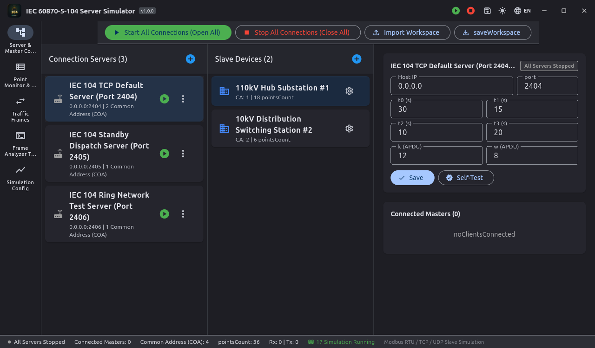
APCI sliding window management, ASDU tele-signalling, tele-metering, mathematical simulation curves, and packet analyzer.
Comprehensive, Industrial-Grade Capabilities
Designed from ground up to replace clunky, legacy commercial simulators with modern, reactive, cross-platform engineering toolchains.
Both the protocol parsing engines and CLI engines are developed in 100% standard Dart. No cumbersome external C++ DLLs or libpcap installation required.
Built-in mathematical curves (Sine, Square, Triangle, Random walk, Noise). Dynamically simulates telemetry data without physical hardware sensors.
Custom frameless window, integrated window controls, draggable headers, and high-contrast Dark & Light mode persistence for field operations.
Instant multi-language switching with professional power engineering terms. Full bidirectional RTL layout support for Arabic.
Real-time APCI, ASDU, MMS, GOOSE, and Modbus frame decoding with field-by-field dissection, timestamp recording, and filterable log streams.
Integrated client-to-server loopback self-testing suites, unit test coverage, and multiplatform CI/CD release automation on GitHub Actions.
Two-Way Client & Server Coverage
Complete protocol pair simulation for telecontrol, substation automation, and industrial fieldbus.
Simulates RTU/controlled station. Features APCI sliding window (k/w parameters), ASDU type 1~50, general interrogation responder, clock sync, and math curve simulation.
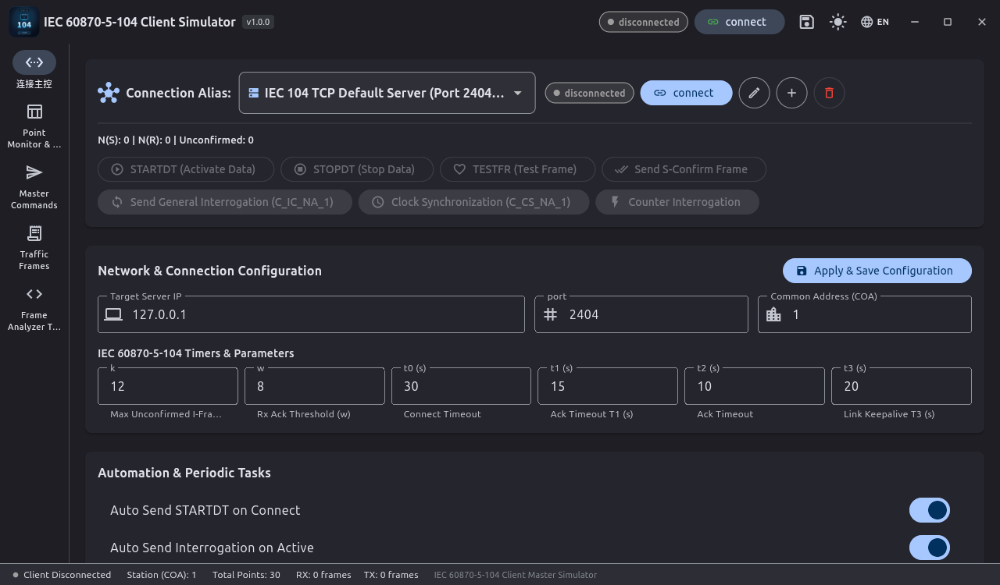
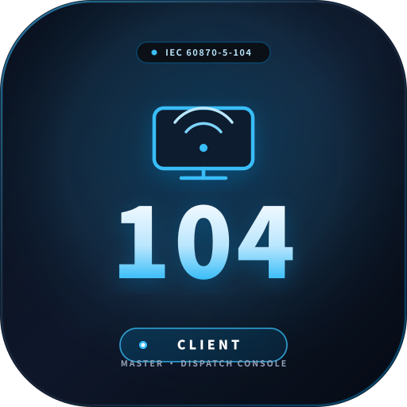
Simulates master/dispatch station. Real-time telemetry monitoring table, general interrogation initiator, tele-control select & execute, parameter regulation, and packet logging.
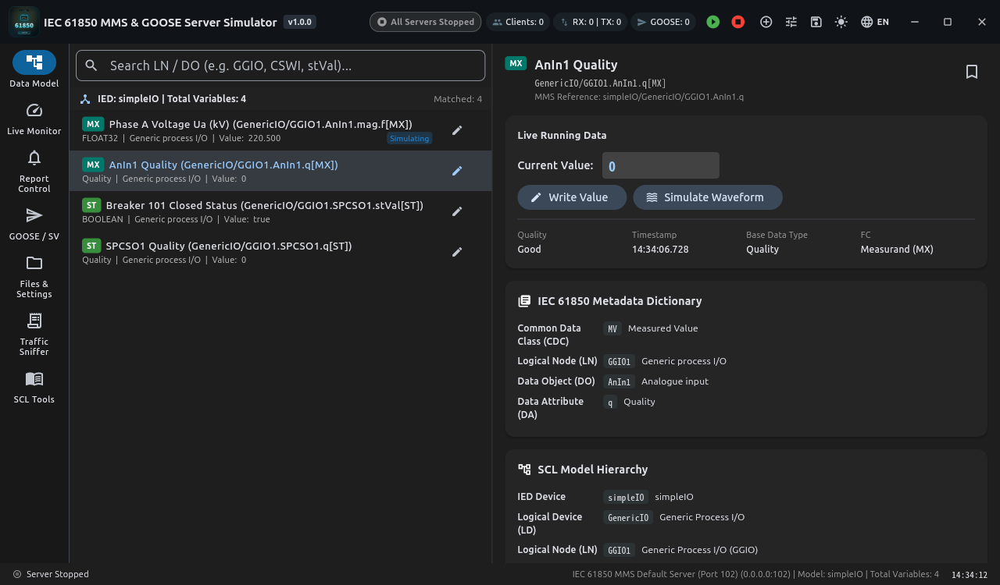
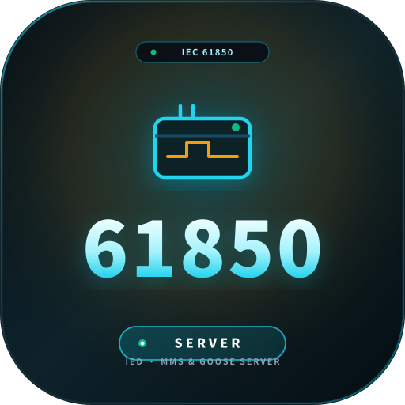
Full SCL (ICD/CID/SCD) model parsing, ISO COTP & ACSE stack, RFC1006 MMS server, GOOSE 8-1 multicast state machine, and data attribute curve synthesis.
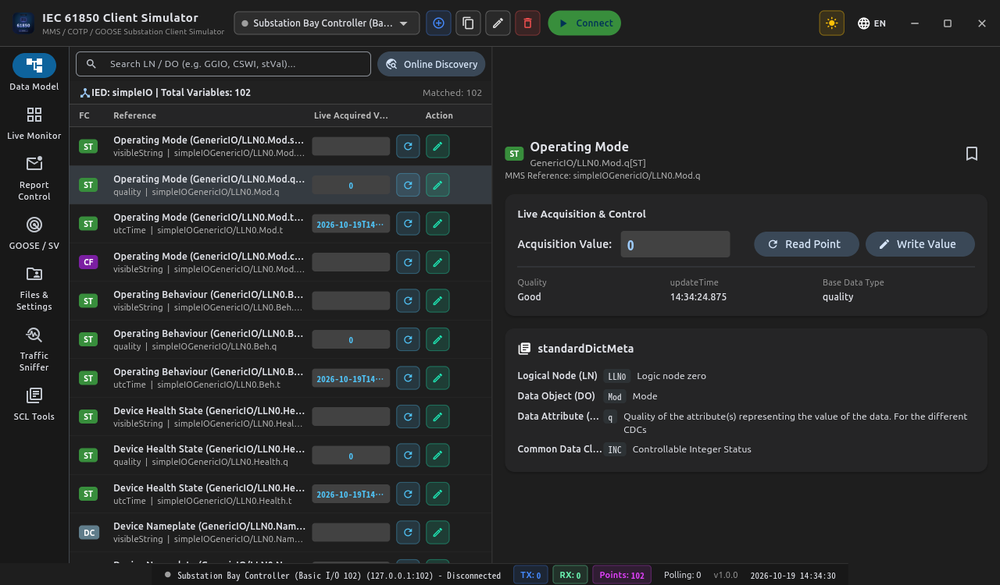
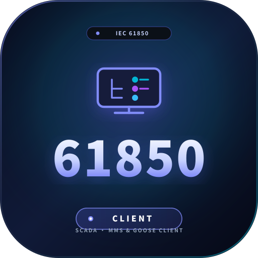
Dynamic online IED model auto-discovery via MMS services (GetNameList, GetVariableAccessAttributes). BRCB/URCB reporting, GOOSE subscriber listener, and point monitoring.
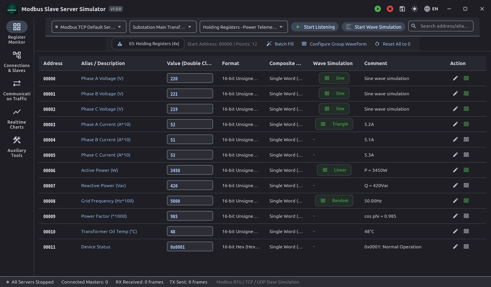
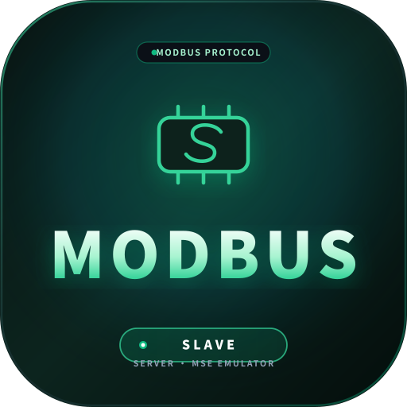
Supports Modbus TCP, UDP, and POSIX Serial RTU. Coils, Discrete Inputs, Input Registers, and Holding Registers. Complete FC01~FC23 support and multi-unit ID routing.
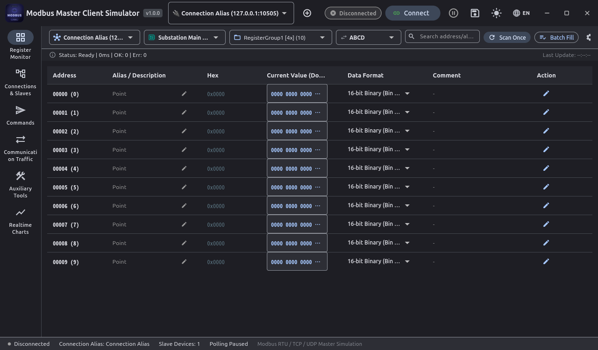
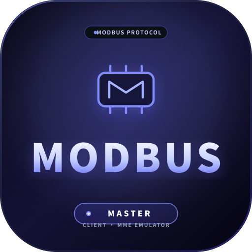
Multi-slave, multi-task polling scheduler. 4 byte orders (ABCD/CDAB/BADC/DCBA), built-in hardware-free virtual slave engine, and CRC16/LRC verification toolkit.
Hierarchical Industrial Network Topology
How the 6 applications map across standard substation and industrial automation layers.
MMS client online discovery, SCL CID/ICD schema validation, GOOSE 8-1 high-speed multicast tripping, and Report control blocks (BRCB/URCB).
APCI sliding-window transmission control (I/S/U frames), ASDU telemetry, remote signaling, remote control, and clock synchronization.
Modbus TCP, UDP, and POSIX Serial RTU (RS-485). Discrete Inputs, Coils, Holding Registers, multi-task polling, and multi-format endian conversion.
Direct Download Center
Select your platform to download installers or standalone portable packages. All binaries are built and signed automatically via GitHub Actions CI/CD.
| Application | Protocol & Role | Primary Installer | Portable Archive | Action |
|---|